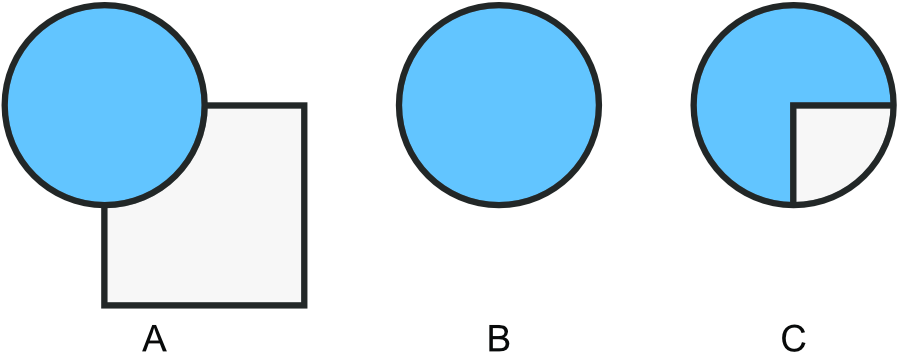

Paste Inside
This feature allows you to paste an object (or selection of objects) inside another object.

(A) original objects, (B) square 'cut' and placed on the clipboard, (C) square pasted inside circle.
To copy and paste inside:
Select one or more objects.
From the
Edit
menu, select
Cut
.*
Select the object which will act as the parent object.
From the
Edit
menu, select
Paste Inside
.
SEE ALSO:
Paste Styles
Targeting objects
Layer clipping